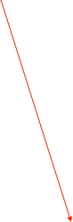

Containers


The container object is for organization of complex configurations and/or for constructing dynamic custom displays. Data and commands can be passed in and out of containers by using the Input and Output I/O objects.


The Output I/O object passes messages to outside objects connected to the right side of the container. The number of connections can be set in the object’s dialog.
Below is a somewhat contrived example showing messages being passed in and out of a container:
A container in the data chain


The Inputs and Outputs on the outside of the container match one-to-one with the connection points of the message pipes in the container.
Containers can also have a background image. Combined with the dynamic labels (see below) custom displays can be constructed.
Dynamic Labels
Text labels can be placed into either containers or the main configuration windows for labeling purposes. The labels can display static text or the result of a Command Center command. Double-clicking a label will bring up the following dialog:

Cntrl-Click to get a pop-up menu to set or clear a background image
A dynamic label showing the run number
Of course the temptation will exist to call a method that has side-effects, i.e. does some action in addition to returning a value. While not prohibited, it is probably an urge that should ignored unless you know what you are doing.
State Labels
State labels are very much like the dynamic labels and can be placed into either containers or the main configuration windows for the display of some object’s TRUE/FALSE state. A non-zero result will always be interpreted as a TRUE value. Prefixes can be attached to the result for labeling purposes and the label type can be specified.
The displayed text can be either a static message or the result of a Objective-C method call. Multiple commands should be separated by carriage returns
The polling interval for the Command. If the label type is Static then this control is disabled and has no effect.
If the label type is Command a format can be defined. In this example, the result of the command is displayed as an integer. A float format can also be used, i.e. %.2f. If a string is to be displayed, or a value that can be a string or a number -- use %@
An Alt Dialog can be defined that will open when the label is double-clicked. In that case, a cmd-double-click will open the text label dialog.
Once again, the temptation will exist to call a method that has side-effects, i.e. does some action in addition to returning a YES/NO value. While not prohibited, it is probably an urge that should ignored unless you know what you are doing.
Objective-C method call that returns a TRUE/FALSE result. Multiple commands should be separated by carriage returns.
A label or prefix that will be attached to the final displayed result
An Alt Dialog can be defined that will open when the label is double-clicked. In that case, a cmd-double-click will open the text label dialog.
Select the wording and the color of the result

The displayed label resulting from the above settings

The displayed label resulting from the above settings